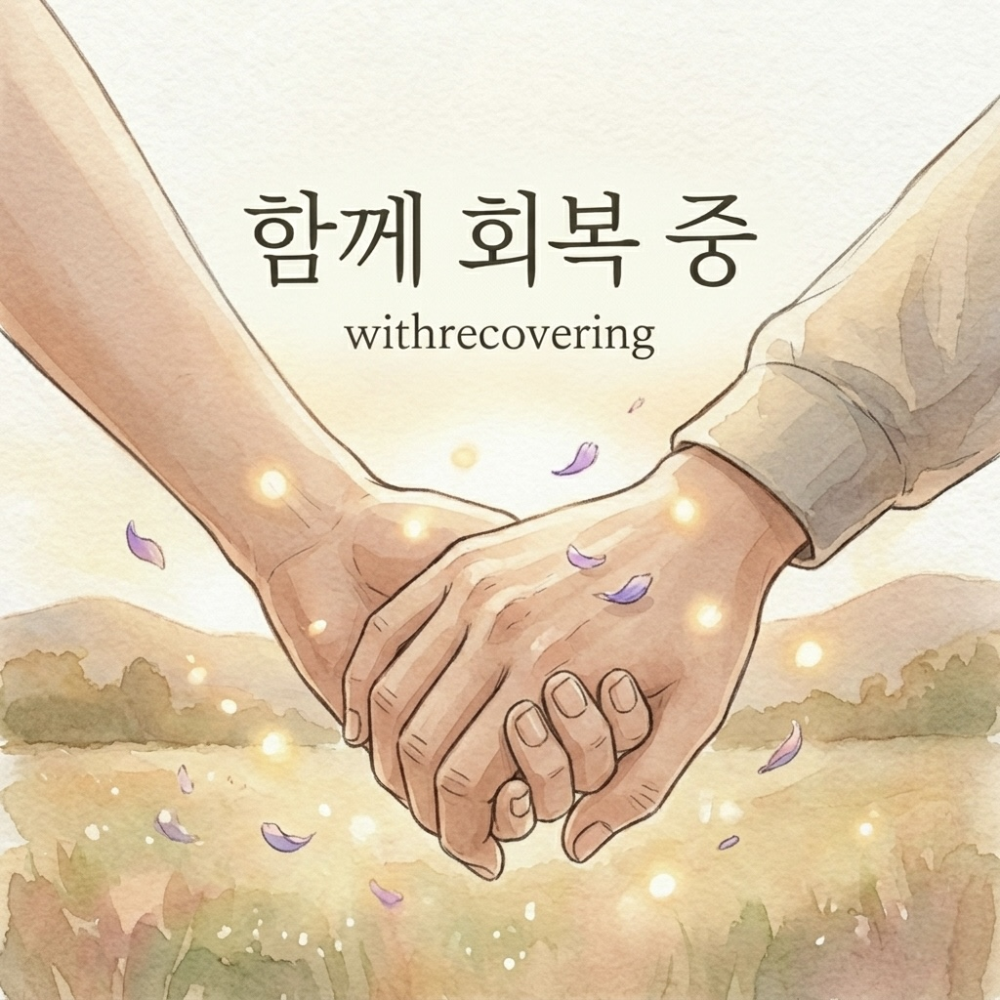
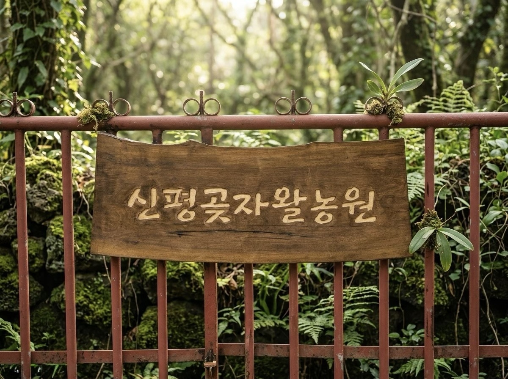

민우의 이야기
안녕하세요. 민우입니다.
이곳은 제가 남겨온 글과 삶의 기록, 그리고 신평곶자왈농원과의 연결을 모아두는 허브입니다.
누가 보든 보지 않든, 나에게 오래 남는 문장을 조용히 아카이빙하고 싶어 이 공간을 만들고 있습니다.
제주 농원에서 살아가며, 회복과 삶을 기록합니다.
안녕하세요. 민우입니다.
이곳은 제가 남겨온 글과 삶의 기록, 그리고 신평곶자왈농원과의 연결을 모아두는 허브입니다.
누가 보든 보지 않든, 나에게 오래 남는 문장을 조용히 아카이빙하고 싶어 이 공간을 만들고 있습니다.
회복과 삶에 대한 글은 브런치에 가장 먼저 남깁니다.
제주 농원에서 살아가며 적어두는 기록들을 이곳에서 읽을 수 있습니다.
원문 아카이브
brunch.co.kr/@withrecovering
삶과 회복에 대한 원문 글들을 가장 먼저 남기는 본진입니다.
브런치 전체 글 보기

신평곶자왈농원은 제가 살아가는 실제 공간이자, 글의 배경이 되는 장소입니다.
이곳에서 계절을 보고, 감귤을 돌보고, 삶과 회복을 함께 배우고 있습니다.